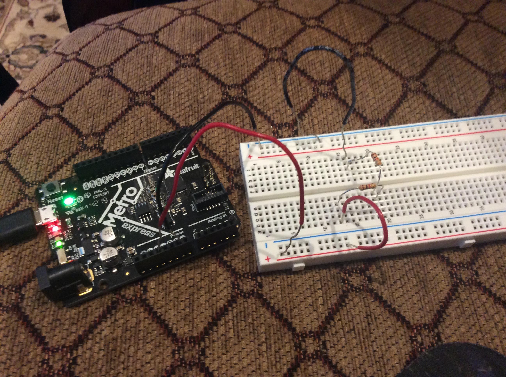
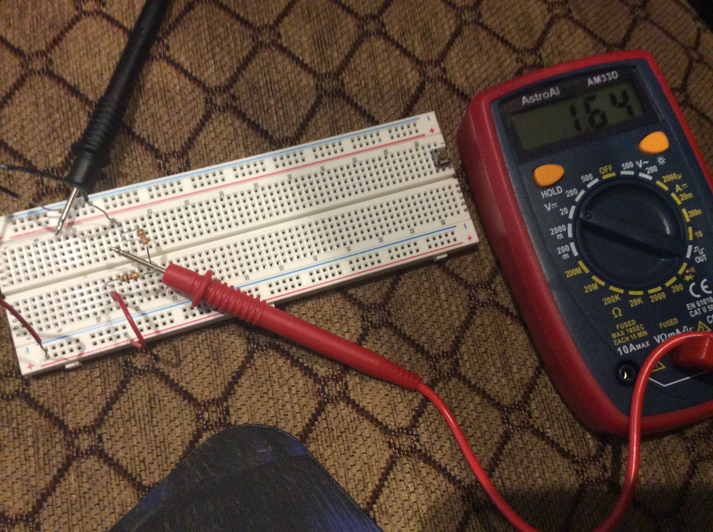
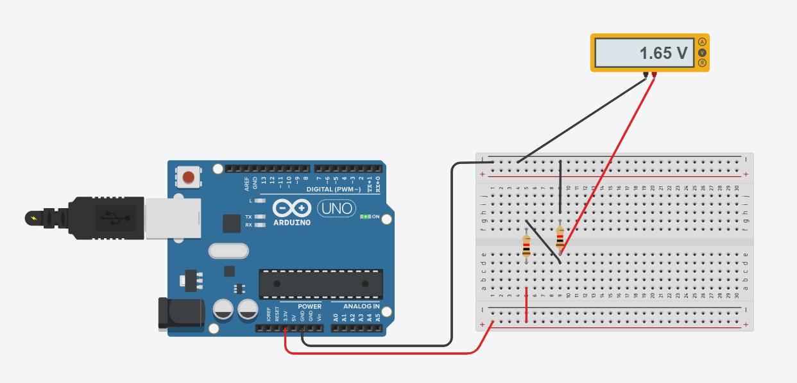

|PHYS S-12| Week 2
Day 3: Basics of Electronics and Microcontrollers
Today, we were introduced to a handful of new things. Out of the box that we opened last class, we pulled out a list of things: a Metro MO Microcontroller, a white Breadboard, some wires (red, black, and yellow), a wire stripper, a mulitmeter, a bunch of resistors, a potentiometer, and some LEDs. Looking at the Microcontroller, I was confused about all the small letters and symbols etched into the controller.
Assignment: Create a circuit using a breadboard and other components. Use a multimeter to measure the voltage of the circuit. Use Ohm's Law to calculate current in the circuit. Also use the Microcontroller Analog to measure the voltage of a potentiometer.
To start off, I built myself a small circuit consisting of red wires stemming from the 3.3 V pin, black wires connecting to the GRND pin, and two 1K Ohm resistors. I plugged the circuit into the port of my computer. The circuit can be seen below.
I then took the multimeter, and measured the voltage in the circuit. I put the black cord against the ground wire, and the red cord against the 3.3 V wire, and of course, I received a reading of 3.3 V. However, when I put the red cord between the two resistors, I found that the voltage was cut roughly in half, giving me a reading of 1.64 V.
I also rebuilt the circuit on Tinkercad to confirm my readings. The Tinkercad circuit is arranged differently, but it still gets the job done.

Using Ohm's Law, which states that the current through a conductor between two points is directly proportional to the voltage across the two points, I can calculate the current of my circuit in front of me.
In the situation with the resistors, I would be dividing 1.64 V by 1000 (for 1K resistor). That would equal a current of 0.00164 A.
Day 4: Beginnings of Rapid Prototyping
As our second week began to wrap up (time passed by way too fast), we were introduced to
Assignment: Create a kinetic sculpture using circuits and physical components.